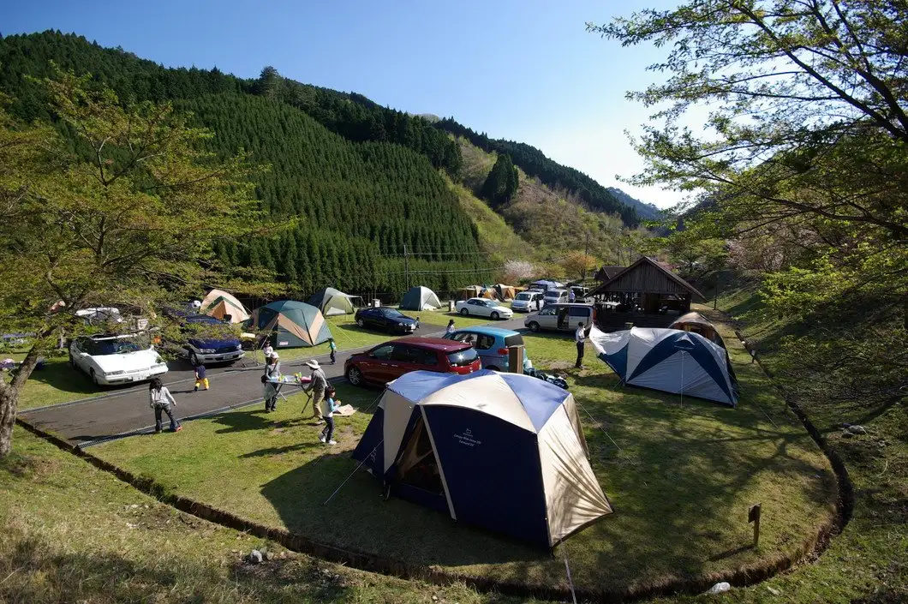
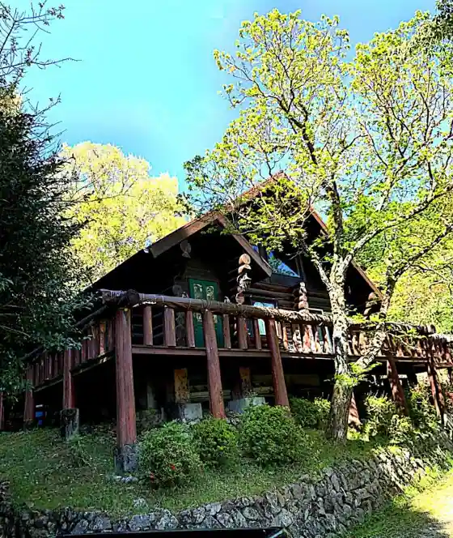
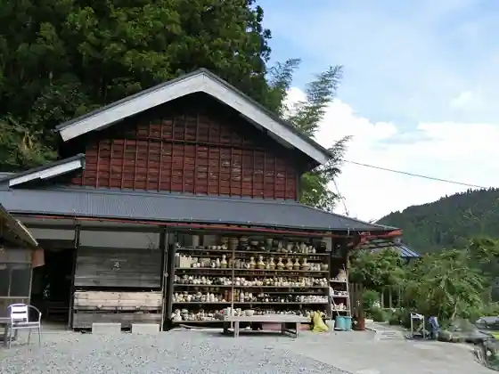
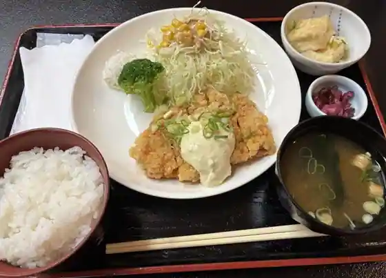
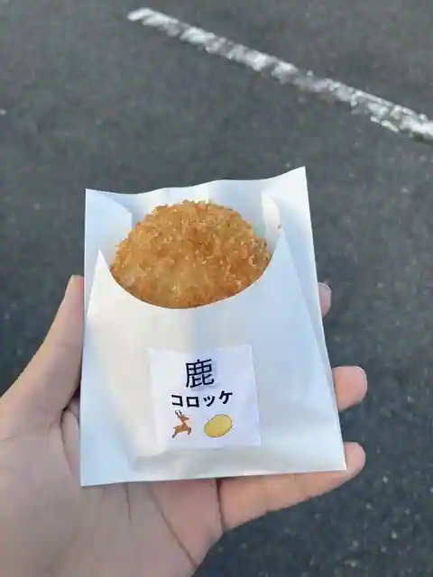
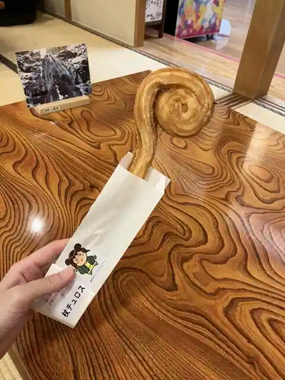
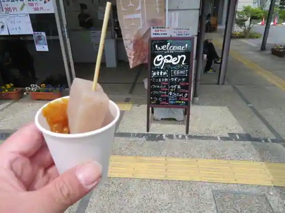
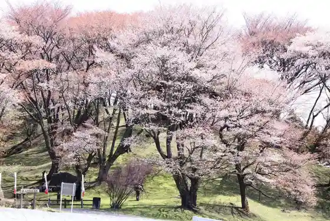
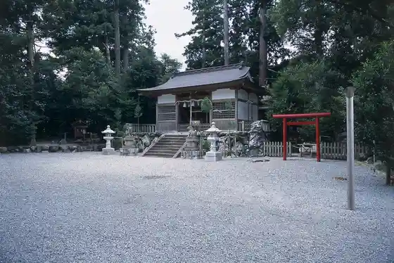

Mitsue, Nara: things to do, food and stays
Mitsue · Nara
Mitsue
Highlighted on the Nara map.

Stay
ログハウス・バディ

Rogu House Badi
Ｇｕｅｓｔ Ｈｏｕｓｅ Ｙｕ－Ａｎ 遊庵

Guest House Yu-An Yu Iori
Dining
道の駅 伊勢本街道 御杖

Michi No Eki Ise Hon Kaido Mitsue
お食事処 山桜

O Shokuji Tokoro Yamazakura
焼きたてパン お食事処 どんどん
Yaki Tate Bakery O Shokuji Tokoro Dondon
うぐいす

Uguisu
おいしいもの販売所

Oishimono Hanbaijo
ほらのもり
Horanomori
Sights
Mitsue Seishonen Ryoko Village
Mibu Yama
Fudo Falls (Mitsue)
Maruyama Park

Shi Sha Shrine

Hime Ishi Myojin
Okada no Tani no Hange Nama Sono
Mitsue
Mitsue Shrine
Kasuga Shrine (Tsuchiya Hara)
Roadside Station Ise Hon Kaido Mitsue